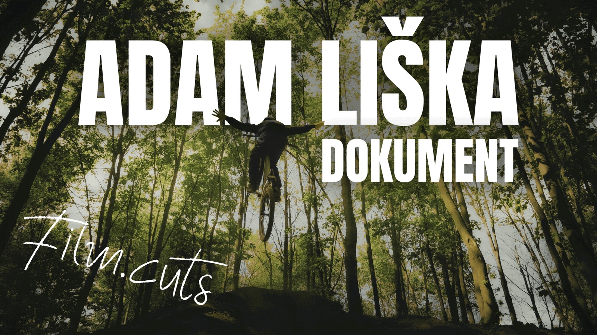
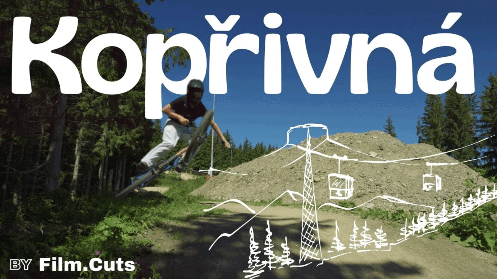
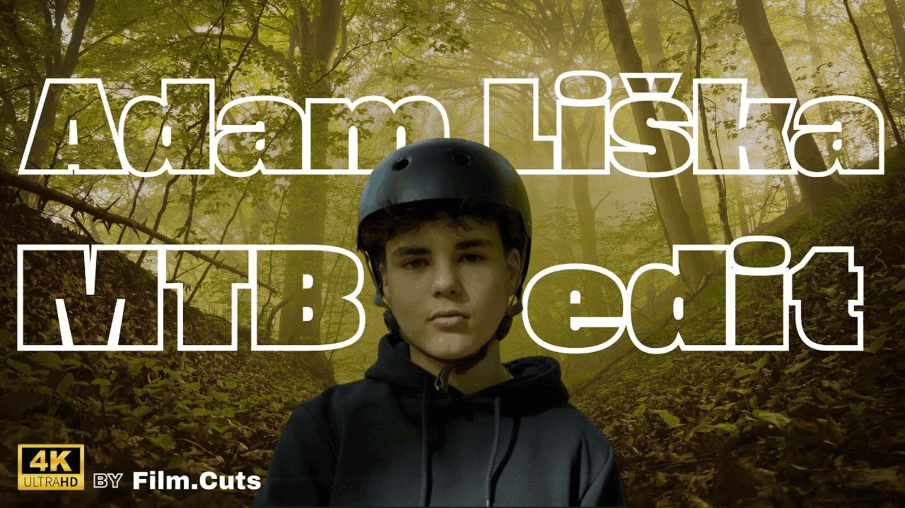
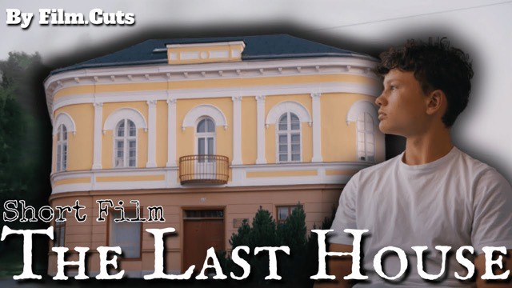
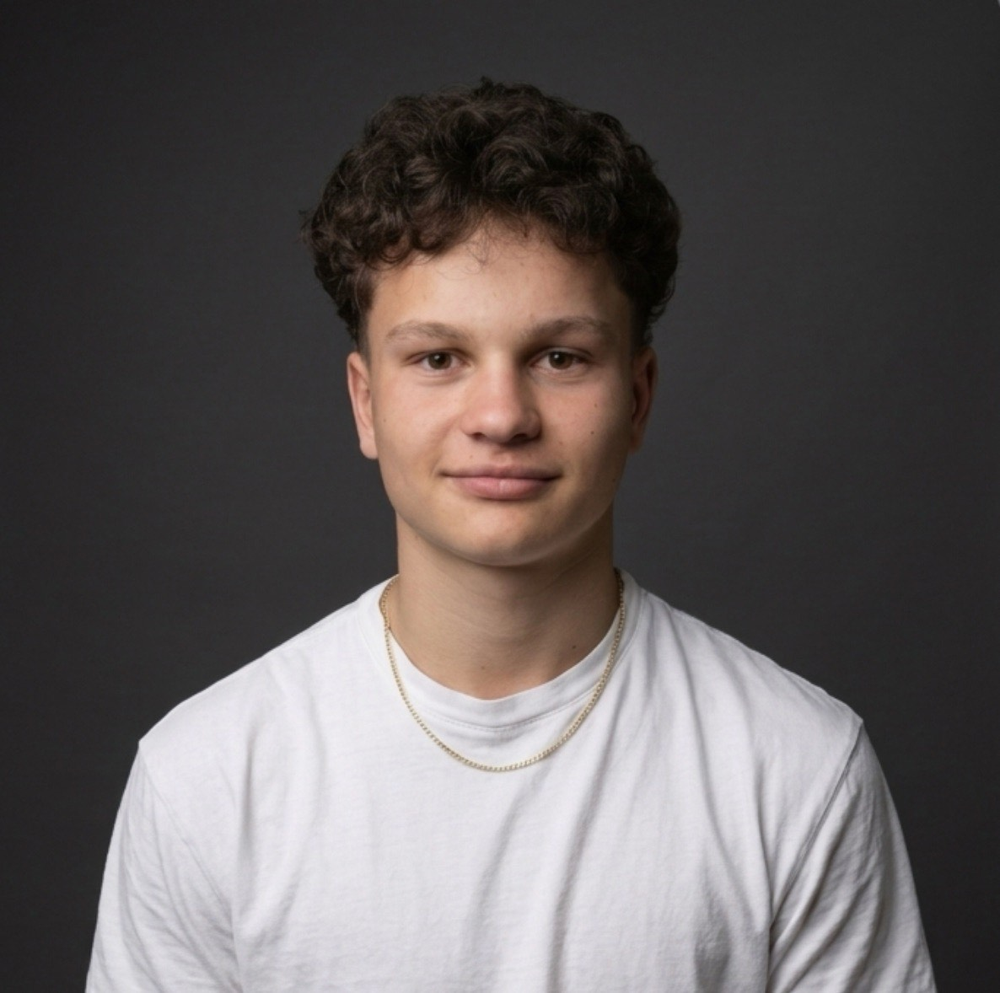
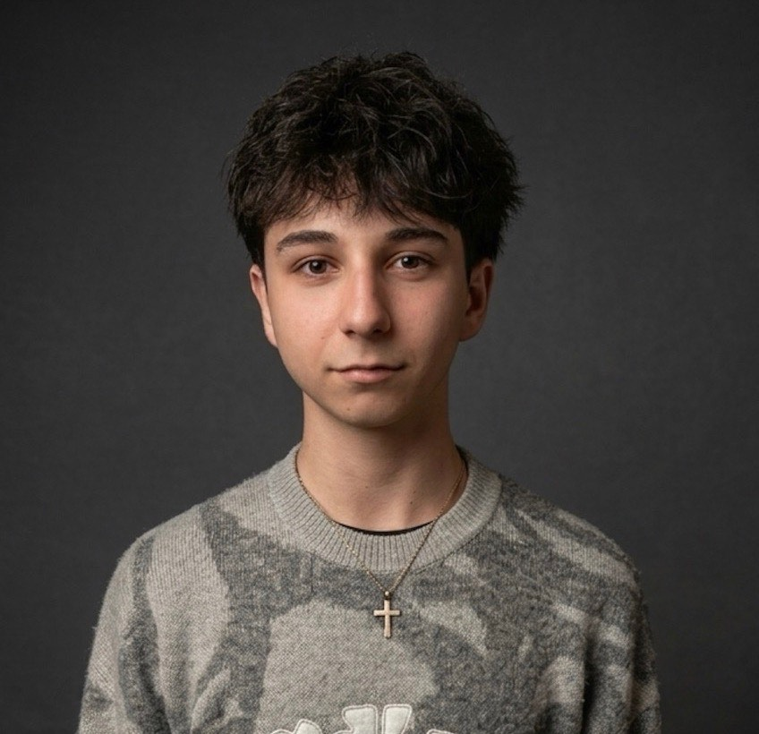

MEZI
Psychologické drama o muži, který se ocitá v prázdném městě bez lidí. Snímek zkoumá hranici mezi životem a smrtí skrze ticho, izolaci a atmosféru.
Jmenuji se Kamil Štencel a pod značkou Film Cuts tvořím krátké filmy a vizuální projekty. Tento web představuje výběr mé práce, dokončené realizace i projekty ve vývoji.
ProjektyPřehled vybraných projektů napříč dokumentární, krátkometrážní i sportovní tvorbou. Každý z nich ukazuje jiný způsob práce s obrazem, rytmem a atmosférou, ale všechny spojuje důraz na vizuální vyprávění, autenticitu a pečlivé filmové řemeslo. Tato sekce představuje ukázku přístupu k tvorbě i spolupráci s lidmi, jejichž příběhy stojí za zachycení.
 NEW
NEWPsychologické drama o muži, který se ocitá v prázdném městě bez lidí. Snímek zkoumá hranici mezi životem a smrtí skrze ticho, izolaci a atmosféru.

Dokument sleduje šestnáctiletého MTB ridera Adama během tréninků a závodů.

Psychologický thriller z prostředí digitálního světa, kde jedno nenápadné rozhodnutí spustí řetězec nevratných následků.

Experimentální montáž zkoumající světlo, rytmus a kontinuitu obrazu.

Krátký film pro značku, který pracuje s kontrastem ticha a napětí.

Krátký mysteriózní film o návratu do opuštěného domu — důraz na vizuál a atmosféru.
Projekty v přípravě a v plánu. Sledujte nás pro nejnovější obsah.
Politický cyber-thriller
Příběh o sledování, umělé inteligenci a lidech, kteří se rozhodnou postavit systému.
Hledáme finanční prostředky na realizaci.
Tvůrce a vedoucí projektu

Jsem videomaker, kameraman a začínající režisér, který se zaměřuje na vizuální příběhy s jasnou atmosférou a rytmem. Baví mě práce s kamerou, světlem a střihem tak, aby každý záběr měl smysl a podporoval emoci, kterou chci předat. Učím se s každým projektem a postupně si buduju vlastní styl založený na jednoduchosti, čisté kompozici a přirozeném vyznění.
Kromě vlastní tvorby pomáhám také ve FrameCrew jako runner a asistent. Díky tomu mám možnost být součástí větších produkcí, sledovat zkušené profesionály přímo na place a učit se z jejich postupů. Tahle práce mě naučila rychle reagovat, řešit technické i organizační situace a být spolehlivou součástí filmového týmu. Získané zkušenosti pak přenáším i do vlastních projektů, kde mi pomáhají lépe plánovat, komunikovat a držet natáčení v hladkém chodu.
Spolupracuji na menších filmových i komerčních projektech a vždy se snažím, aby výsledek působil profesionálně a autenticky.
Více fotografií z natáčení najdete u jednotlivých projektů — podívejte se do sekce Projekty.
Kreativci a technici, kteří stojí za každým projektem.

Herec / Asistent
Věnuje se hereckým rolím a zároveň pomáhá na place se světlem a technickými úkoly.

Asistent / Produkční
Stará se o organizační zajištění natáčení a pomáhá s technickými úkoly na place.

Kameraman doplňkových záběrů
Natáčí doplňkové záběry, druhou kameru a BTS materiál.